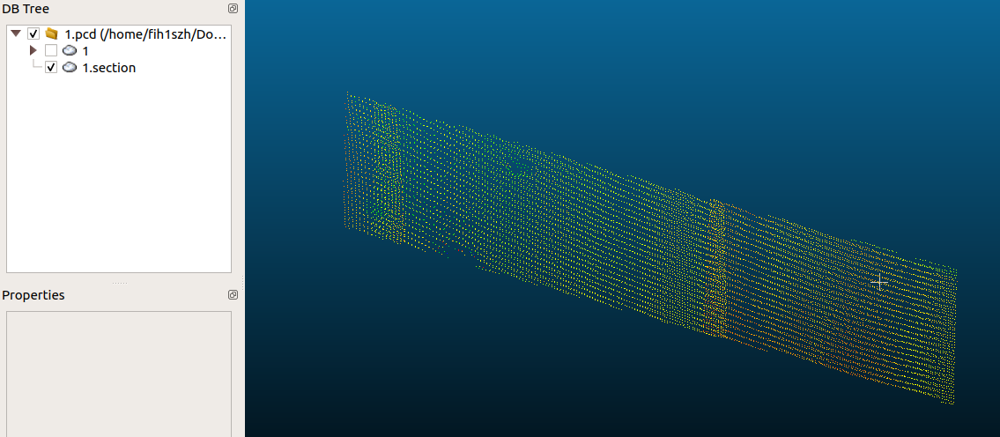
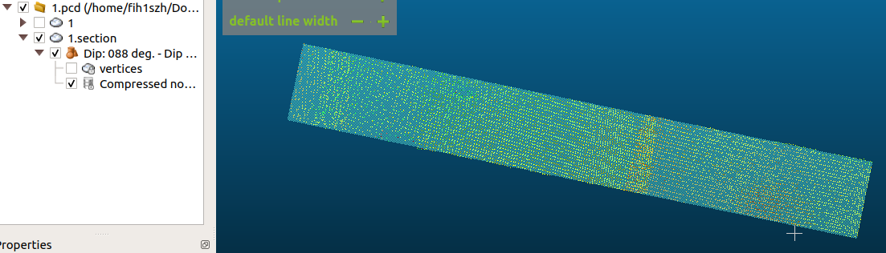
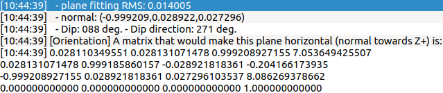
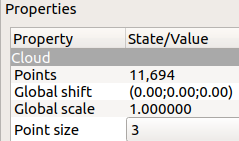

how to use cloudcompare
1. Install CloudCompare
$ sudo snap install cloudcompare
2. Divide out the plane and save some cloud data
Tools → Segmentation → Cross Section Slices → Export selection as a new cloud File → Save → Point Cloud Library cloud

3. Plane fitting
Tools → Fit → Plane


4. Visualization results
